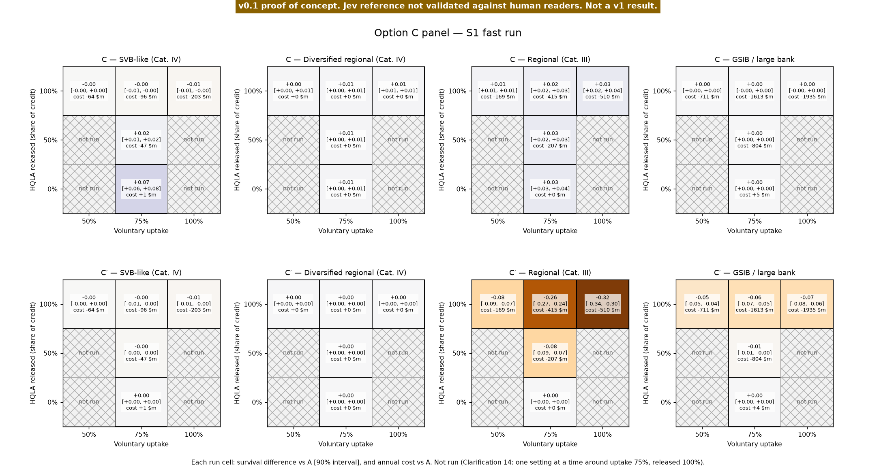
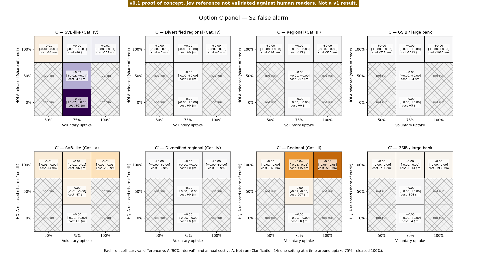

Option C panel
C and C′ across voluntary uptake and the share of HQLA released. Defaults: uptake 75%, released 100% (contract 2d). Cells off the cross are not run (Clarification 14: one setting at a time around uptake 75%, released 100%). Each run cell shows survival against A (paired, 90% interval) on the 9 mid-range cells, the grid every point of the cross was run on. Under current LCR scope, the Category IV diversified regional bank gets no LCR credit under C or C′ (contract 1c), but C's routine-borrowing rate (r = uptake × 2.5) applies to every bank (contract 3a), so it still lowers that bank's effective stigma (corrected 2026-10-09, Amendment 8). C's cost saving and its buffer gap are the same money: see the scorecard, where they sit side by side.
S1 fast run

S2 false alarm

git commit f2bcb09c5073 · config hash 3835bc0add36d4c2 · params fingerprint 05f9e763efc16772 · Jev estimate v0.1-signals (frozen at e14cd74; markers provisional) · Jev model jev-1.13.0 · results written 2026-10-09T01:19:04 · schema 1.1